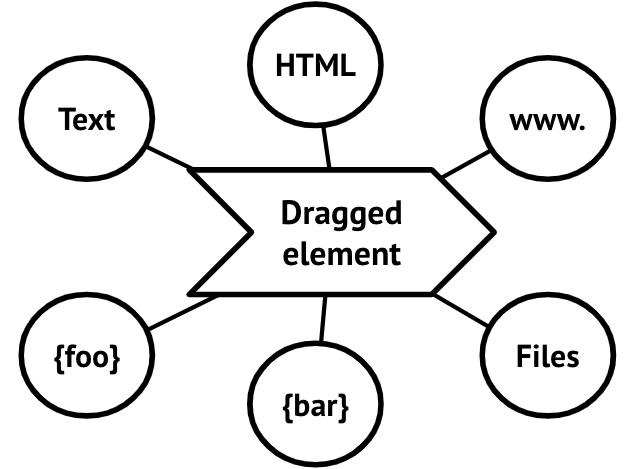
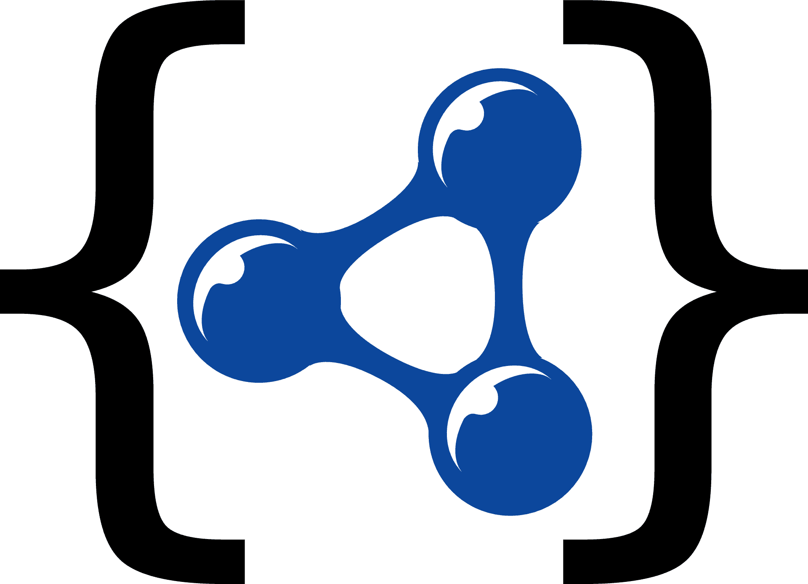

Share data beyond the browser boundaries
Interact with third-party apps and open up your application to receive external data.
 Transmat isn't about drag-and-drop, but about sharing data between applications on the web. Transmat is a small library around the DataTransfer API that eases transmitting and receiving data in your web app using drag-drop and copy-paste interactions.
The DataTransfer API has the ability to transfer multiple string data payloads to any other application on the user's device. This technique is compatible with all modern desktop browsers (everything after IE11) and can be used today.
Drag or copy the element below to a new browser window, a text editor or WYSIWYG editor.
Drag or copy me!
Containing HTML, Text, URL and JSON data.
Drop or paste here!
npm install transmat<div id="myElement" draggable="true" tabindex="0">
Transmitter and receiver
</div>import {Transmat, addListeners} from 'transmat';
addListeners(myElement, 'transmit', event => {
const transmat = new Transmat(event);
transmat.setData({
'text/plain': 'Hello world!',
'text/html': '<h1>Hello world!</h1>',
'text/uri-list': 'http://example.com',
'application/json': {foo:'bar'}
});
});import {Transmat, addListeners} from 'transmat';
addListeners(myElement, 'receive', event => {
const transmat = new Transmat(event);
if (transmat.hasType('application/json') && transmit.accept()) {
const payload = transmat.getData('application/json');
console.log(JSON.parse(payload));
}
}); While custom payloads are useful for communication between applications you have in your control, it also limits the ability to transfer data to external apps. JSON-LD (Linked Data) is a great universal standard for this;
JSON-LD might sound scarier than it is. Here’s an example of what this looks like for a Person:
const person = {
'@context': 'https://schema.org',
'@type': 'Person',
name: 'Rory Gilmore',
image: 'https://example.com/rory.jpg',
address: {
'@type': 'PostalAddress',
addressCountry: 'USA',
addressRegion: 'Connecticut',
addressLocality: 'Stars Hollow'
},
};
transmat.setData('application/ld+json', person);Transmat comes with several JSON-LD utilities to ease common interactions with the data.
By using JSON-LD data, you will support a connected and open web. Think of all the possibilities when you could transfer elements to other applications to continue your work. That would be great, right? This starts with you! 🙌
More documentation and examples at the GitHub repository.